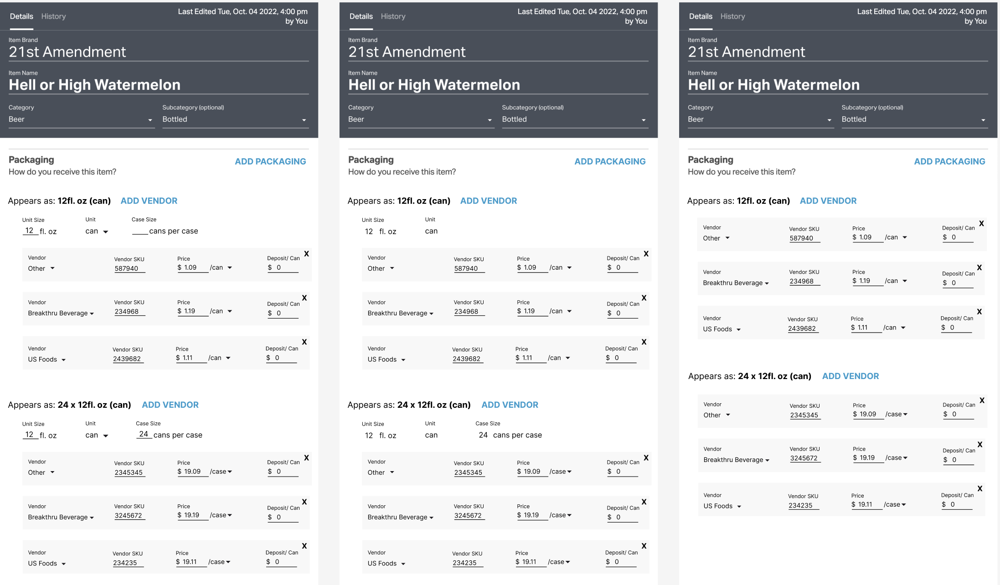
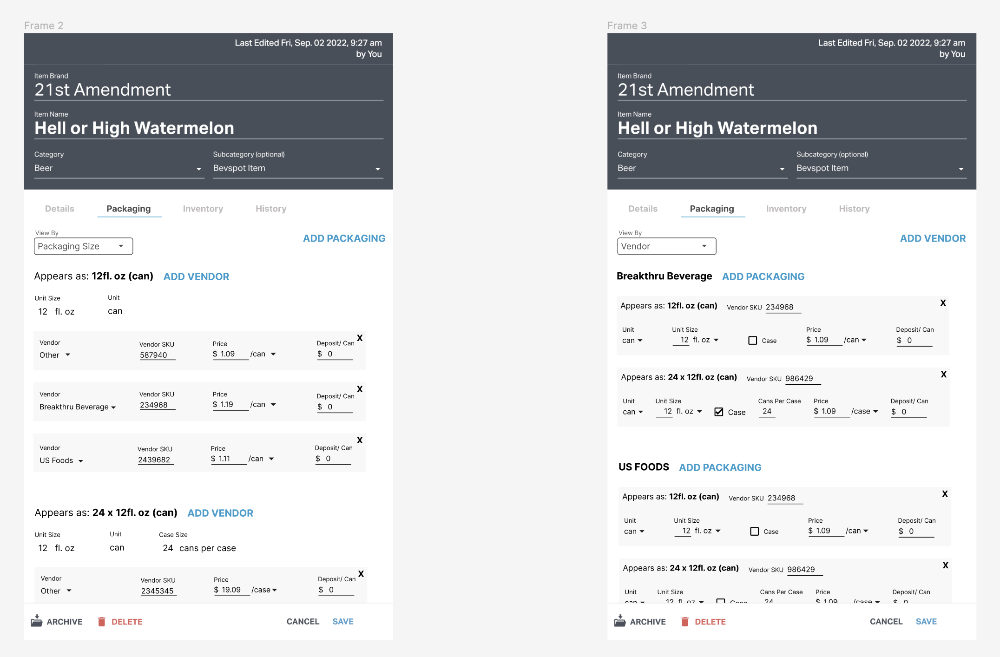

Multi-Vendor Ordering
Designing a way for users to order the same item from multiple vendors.
The Problem
Managing inventory and reporting becomes complex for a user who consumes the same item from different vendors and in varying sizes. This situation creates challenges in accurately counting inventory and reporting, especially when multiple instances of the same item are obtained from different vendors and in different sizes. The user's objective is to effectively manage a single item that comes in multiple packaging sizes from different vendors, allowing for easy comparison of costs among different purchasing options.
The Solution
- Redesign the Item Card to be able to add multiple vendors to a given packaging size
- Redesign Cart Builder to showcase the different packaging sizes and vendors for a single item
Redesigning the Item Card
By employing the 'Crazy 8s' method, I generated eight distinct mockups using Figma. These mockups explore various approaches to showcasing packaging information within the Item Card component.

In collaboration with internal stakeholders, we conducted a thorough review of the eight designs, discussing our likes and dislikes for each. Based on this feedback, I returned to Figma to integrate the most favorable aspects into distinct approaches for displaying multiple packaging sizes sourced from multiple vendors.
 I engaged in multiple iterations of this process, continuously refining our designs to strike a balance between intuitiveness, cleanliness and minimal disruption to the current packaging implementation on the Item Card. Throughout these rounds, we carefully considered and incorporated feedback to ensure the final display of multiple packaging sizes from different vendors met our objectives.

Redesigning Cart Builder
After designing a way for the user to create and manage a single item with multiple packaging sizes and vendors, the next step was to facilitate the seamless ordering of this item in different sizes from various vendors. To meet this requirement, my focus was on preserving the current UI as much as possible to minimize any disruption for the user. Presented below are the high-fidelity mockups created in Figma, reflecting the proposed design enhancements.
Once the mockups were finalized, we arranged discussions with key customers to gather their feedback on the designs. After a few minor iterations based on their input, I collaborated closely with the backend engineer to implement the required UI updates for accommodating multi-vendor ordering. The final design, reflecting these changes, is presented below.


Next Steps
Having enabled the creation and ordering of different purchasing options for the same item, our next step is to gather feedback using Maze and staging data. This feedback will be instrumental in iterating on the design prior to the official launch and identifying any critical bugs (P1) within the code. It's important to note that this implementation involves significant changes to the back end and existing data, necessitating a comprehensive release plan.
Once these changes are pushed to production, we will need to ensure that the rest of the application, including inventory counting and reports, is modified to accommodate this new feature. This transition requires a thorough approach to ensure a seamless integration and minimize any disruptions to the existing functionality.
Overall, this endeavor represents a significant change that requires meticulous planning, thorough testing and careful execution to ensure a smooth and successful adoption of the new capabilities and features within the application.